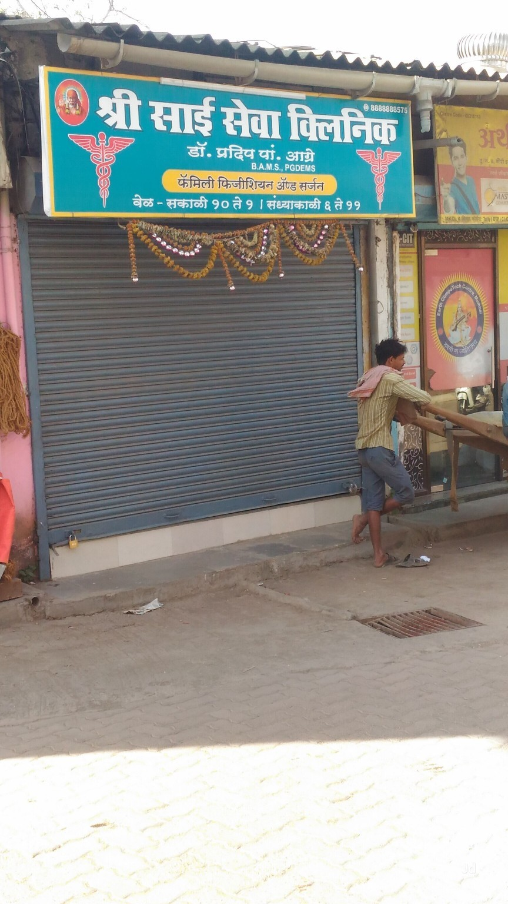

ABOUT THE CLINIC
Shri Sai Seva
Clinic.
A family clinic whose field-project website presents its services, visit information and a simple appointment-request demo.

Clinic identity
The signboard identifies Shri Sai Seva Clinic and describes the practice as Family Physician and Surgeon.
Clinic hours
Morning: 10:00 am–1:00 pm
Evening: 6:00 pm–11:00 pm
Hours and clinic details are transcribed from the signboard supplied with the field-project presentation. Please call to confirm before visiting.
Call 88888 88575 ↗Website design and development field project presented by Yash Patil. The presentation records 45 hours of project work in September 2026.
This static site is an educational demo. It does not provide medical advice or transmit appointment requests to the clinic.